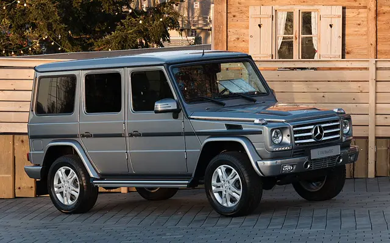

Par Motor › Precios por modelo › Mercedes-Benz Clase G
Precio de segunda mano · noviembre de 2026¿Cuánto vale un Mercedes-Benz Clase G de segunda mano?

Precio justo estimado de un Mercedes-Benz Clase G usado en España, año por año, con los kilómetros normales para su edad y en buen estado: de 35.900 € a 147.900 €. Para tasar el tuyo con sus kilómetros reales y su estado, usa el tasador gratis.
Precios del Mercedes-Benz Clase G por año
Clase G W463 (2000–2018)
Precio de nuevo: G 350 BlueTEC 211 CV, 95.000 € · G 500 388 CV, 110.000 € · G 55 AMG 507 CV, 140.000 €
| Año | Km normales | G 350 BlueTEC 211 CV · Diésel | G 500 388 CV · Gasolina | G 55 AMG 507 CV · Gasolina |
|---|---|---|---|---|
| 2018 | 100.000 km | 71.200 € | 75.100 € | 95.600 € |
| 2017 | 100.000 km | 72.100 € | 75.400 € | 96.000 € |
| 2016 | 100.000 km | 69.600 € | 75.600 € | 96.300 € |
| 2015 | 100.000 km | 66.800 € | 75.700 € | 96.300 € |
| 2014 | 100.000 km | 64.100 € | 75.600 € | 96.200 € |
| 2013 | 100.000 km | 61.500 € | 73.400 € | 93.400 € |
| 2012 | 100.000 km | 59.000 € | 70.400 € | 89.600 € |
| 2011 | 100.000 km | 56.600 € | 67.600 € | 86.000 € |
| 2010 | 100.000 km | 54.300 € | 64.800 € | 82.500 € |
| 2009 | 100.000 km | 52.100 € | 62.200 € | 79.200 € |
| 2008 | 100.000 km | 50.000 € | 59.700 € | 76.000 € |
| 2007 | 100.000 km | 48.000 € | 57.300 € | 72.900 € |
| 2006 | 100.000 km | 46.000 € | 55.000 € | 69.900 € |
| 2005 | 100.000 km | 44.200 € | 52.700 € | 67.100 € |
| 2004 | 100.000 km | 42.400 € | 50.600 € | 64.400 € |
| 2003 | 100.000 km | 40.700 € | 48.600 € | 61.800 € |
| 2002 | 100.000 km | 39.000 € | 46.600 € | 59.300 € |
| 2001 | 100.000 km | 37.400 € | 44.700 € | 56.900 € |
| 2000 | 100.000 km | 35.900 € | 42.900 € | 54.600 € |
Clase G W463A (2018–hoy)
Precio de nuevo: G 350 d 286 CV, 120.000 € · G 500 422 CV, 140.000 € · G 580 EQ (eléctrico) 587 CV, 160.000 €
| Año | Km normales | G 350 d 286 CV · Diésel | G 500 422 CV · Gasolina | G 580 EQ (eléctrico) 587 CV · Eléctrico |
|---|---|---|---|---|
| 2026 | 10.000 km | 121.800 € | 147.900 € | 143.700 € |
| 2025 | 30.000 km | 110.100 € | 133.600 € | 129.800 € |
| 2024 | 50.000 km | 105.600 € | 128.200 € | 124.600 € |
| 2023 | 70.000 km | 101.300 € | 123.000 € | 119.500 € |
| 2022 | 90.000 km | 89.400 € | 118.000 € | 114.700 € |
| 2021 | 100.000 km | 84.800 € | 108.700 € | 105.600 € |
| 2020 | 100.000 km | 86.800 € | 97.800 € | 95.000 € |
| 2019 | 100.000 km | 88.500 € | 94.900 € | 92.200 € |
| 2018 | 100.000 km | 89.900 € | 95.600 € | 92.800 € |
Kilómetros normales: 15.000 al año en gasolina, híbridos y eléctricos, y 20.000 en diésel, con un máximo de 100.000 km (por encima no tasamos: el precio depende demasiado del historial de cada coche). Cifras redondeadas a 100 €.
Preguntas frecuentes
¿Cuánto vale un Mercedes-Benz Clase G de segunda mano?
Según el año, la versión y los kilómetros, un Mercedes-Benz Clase G usado vale hoy de 35.900 € a 147.900 € en España. El más barato de nuestra tabla es un G 350 BlueTEC de 2000 (35.900 €) y el más caro un G 500 de 2026 (147.900 €). Son precios justos estimados entre particulares y profesionales, con los kilómetros normales para su edad y en buen estado.
¿Cuánto valor pierde un Mercedes-Benz Clase G al año?
Con unos años encima, un Mercedes-Benz Clase G pierde alrededor de un 7 % de su valor cada año (calculado sobre el G 350 d de la generación Clase G W463A). Los primeros años la caída es mayor y a partir de los 70.000 km se acelera.
¿Qué motorizaciones tiene el Mercedes-Benz Clase G?
En nuestra base de datos hay versiones diésel, gasolina y eléctrico, en 2 generaciónes: Clase G W463 y Clase G W463A.
¿Cómo sé si me piden demasiado por un Mercedes-Benz Clase G?
Abre el tasador de Par Motor, elige el Mercedes-Benz Clase G, el año y los kilómetros reales, y escribe lo que te piden. Te diremos si está por debajo del precio justo (chollo) o por encima (caro). Es gratis y no pide registro ni matrícula.
Historia y curiosidades
Otros Mercedes-Benz
- CLA
- Clase A
- Clase B
- Clase C
- Clase E
- Clase S
- Clase T
- Clase V
- CLK
- CLS
- EQA
- EQB
- EQE
- EQS y EQC
- GLA
- GLB
- GLC
- ML y GLE
- SL y AMG GT
- SLK y SLC
Compara su coste real
El precio de compra es solo una parte. Mira cuánto te costaría al mes con combustible, seguro, neumáticos, mantenimiento y lo que pierde de valor.
Abrir el comparador →